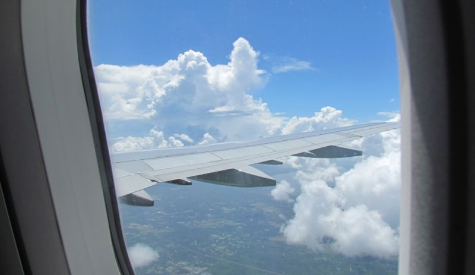
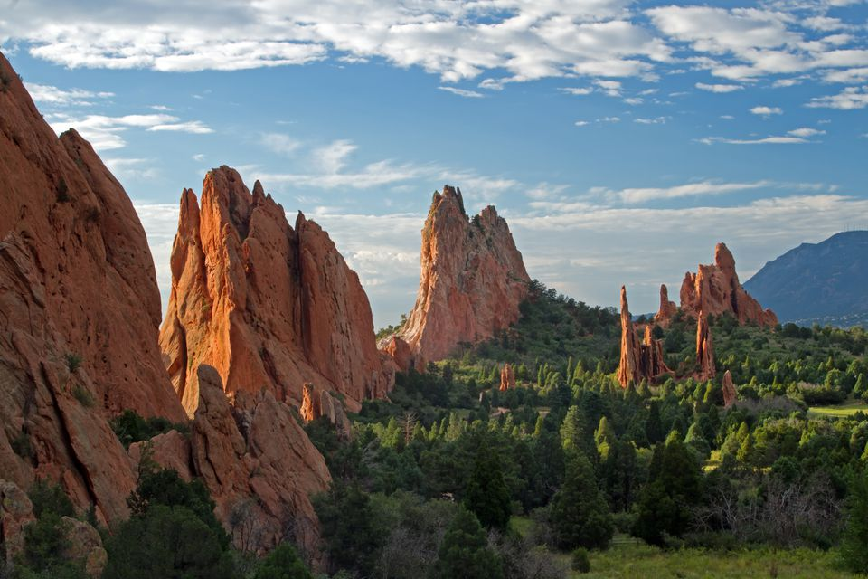
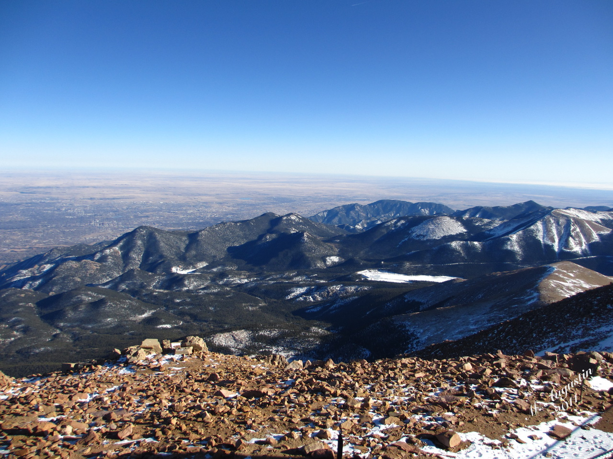
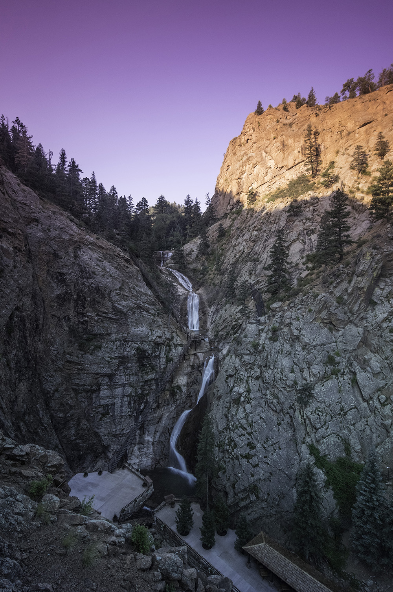

Colorado Vaction 2018
Jump to a certain day? Click one of these!
| Day 1 | Day 2 | Day 3 | Day 4 |
Day 1
We started out by going to the airport early in the morning to catch our few hour flight to Denver, CO. It was the first time I've ever been in an airplane so I was really excited. I got pretty tired about ¾ of the way through the plane ride. It was a really cool experience though. After we landed we drove out to Colorado Springs to our hotel and then explored the area for a little bit.
Day 2
On our second day, we went to two places. We went to the Cave of the Wind and the Garden of the Gods. The cave was super cool to look at and explore for a while. I got a cool looking mini stuffed t-rex from the gift shop. The Garden of the Gods was beautiful to look at. There were these cool rocks coming out of the ground and mountains everywhere. It was an incredible sight.
Day 3
The third day of the trip was my favorite day there. We decided to go to the top of Pike's Peak. Pike's Peak rises about 14,000 feet above sea level and has an incredible view from the top. You are supposed to be able to see to the next state in a few directions.
Day 4
Today we went to this place called the Seven Falls. It's a few beautiful paths with some waterfalls at the end. It was really cool to walk through and see. Sadly, this was our last day in Colorado, but I do hope to go back there some day.
